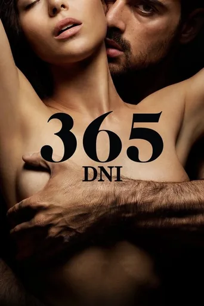

365 дней 2020
Массимо Торичелли — молодой красивый босс сицилийской мафиозной семьи. После убийства отца конкурентами он вынужден взять на себя его обязанности. Лаура Бель — директор по продажам в роскошном отеле. Она строит карьеру, но в личной жизни ей не хватает страсти. Лаура делает последнюю попытку сохранить отношения — вместе с женихом и друзьями она летит на Сицилию, где её похищает Массимо и даёт ей 365 дней, чтобы Лаура его полюбила.
Открыть в каталогеДанные и постеры принадлежат их правообладателям. Этот продукт использует TMDB API, но не одобрен и не сертифицирован TMDB.